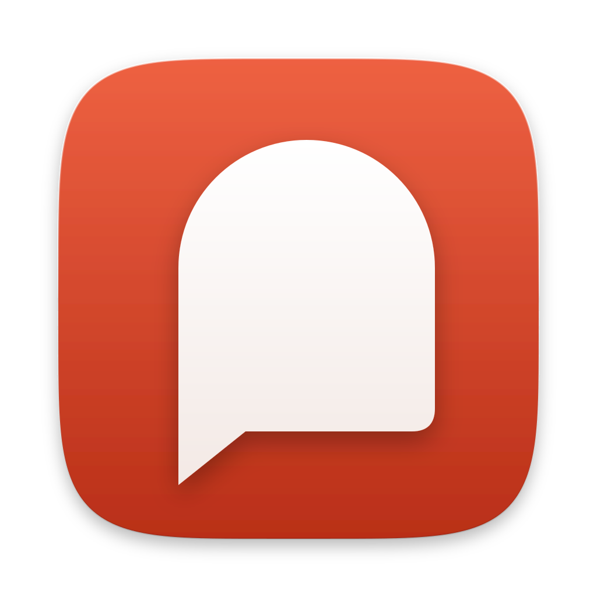

128 / 32 / 16 pt
Sesame
SF Pro Display Semibold
朱门Gate ajar
推开一条缝的朱红大门：要找的产物就在门后。
128 / 32 / 16 pt
Sesame
SF Pro Text Medium，略放宽字距
钥匙孔Keyhole light
门后亮着灯：说出口的那句话就是钥匙。

128 / 32 / 16 pt
sesame
SF Pro Rounded Semibold，全小写
芝麻One seed
一粒芝麻很小，却能开门：小工具，一句话的事。

128 / 32 / 16 pt
Sesame
SF Pro Display Bold，收紧字距
说话的门Speaking arch
门的轮廓就是一个对话气泡：说出来，门就开了。